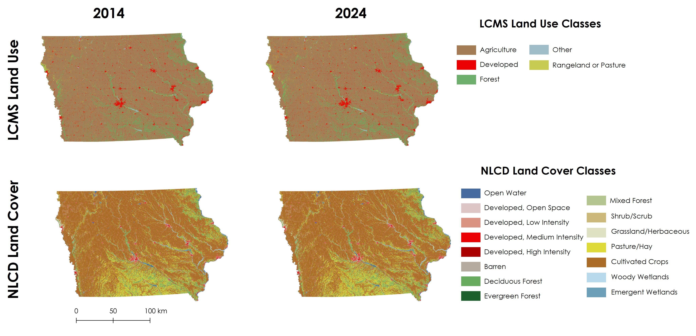
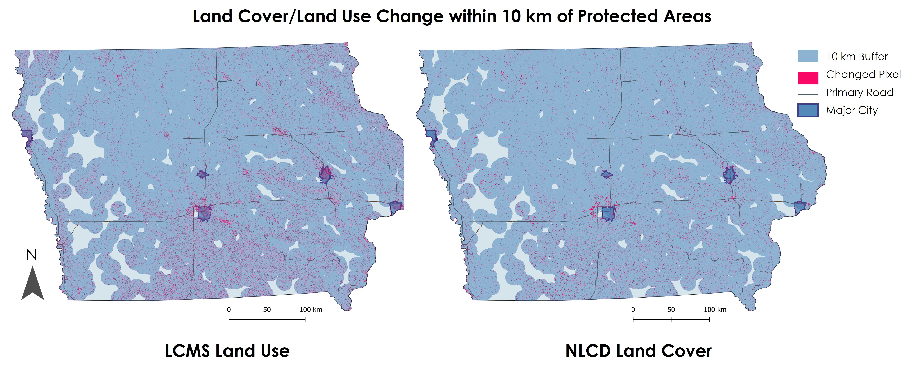

Land Use and Land Cover Change Product Comparison
Iowa Case Study: Exploring two landscape monitoring products' ability to identify changed landscape pixels between 2014 and 2024.
Overview: Landscape change is monitored in a multitude of ways, including through in situ data collection, satellite remote sensing, and aerial surveys. Within the field of remote sensing, two common products stand out: the Landscape Change Monitoring System (LCMS) from the U.S. Forest Service (USFS) and the National Land Cover Database from the U.S. Geological Survey (USGS). Both databases contain several useful data products like land cover, land use, and a change product that captures more nuanced information. In addition to general landscape-level change, an important focus of many states and countries is the effectiveness and status of protected areas (PAs). To incorporate this consideration, this data exploration examines LCMS and NLCD within the context of a 10 km buffer around PAs designated as GAP 1 & 2 (the strictest PA designations from Protected Areas Database of the United States [PAD-US]).
The study area for this product comparison is the state of Iowa.

Methods: I acquired 2014 and 2024 LCMS Land Use data, as well as 2014 and 2024 NLCD Land Cover data from Google Earth Engine by filtering to the desired year and target state of Iowa. I obtained PAD-US data from their ArcGIS Geodatabase and filtered to only GAP statuses 1 & 2. Following, I used those data to produce a 10 km buffer, which I used for cropping and masking of the land cover and land use data. Finally, I calculated change in land pixels between 2014 and 2024 by using a Boolean operator and visualized the resulting output in QGIS.

Results: After calculating the ratio of changed pixels to unchanged pixels for each product, I found that the LCMS land use data showed approximately a 3% change from the start of the decade to the end. NLCD land cover produced similar results with around 4% of pixels changing. Further, when zooming in to a single class, like developed land cover, the results were similar. In 2014, LCMS showed that 5.04% of pixels were classified as "developed", while in 2024, "developed" pixels made up 5.44% of pixels. This produced an increase percentage of 0.76% across the whole state. For NLCD, the data revealed 7.47% of pixels were classified as "developed" in 2014 and 7.87% in 2024, leading to a smaller percentage of change at 0.43%.
Discussion and Conclusion: Ultimately, both products are ideal for exploring land cover shifts, uncovering trend changes, and identifying hot spots of pixel change. The spatial resolution of both LCMS and NLCD is 30 m, and the time period that they cover extends back into the 1980s. Their algorithms differ slightly, with NLCD leveraging neural networks, but the workflows are still quite similar and employ random forest techniques to achieve their end products. The usability of each product depends on research goals, but most of the classes are similar enough in function to make either product viable for a landscape-focused study.